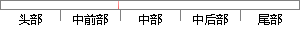

、梯度检查（Griewank & Walther,2000;
片段位置图

相似结果|
相似片段 1： ，Griewank(Griewank，1992；Griewank and Walther，2000)等证明C 为二项式分布时到达最优重算率，且与速度模型的复杂度无关．二项式方法不断的重新布置检查点从而降低重
|
※ 片段修改建议 ※
近似词参考：- 检查：查抄 搜检
系统自动生成语句：、梯度查抄（Griewank & Walther,2000;
注：本片段修改建议为系统自动生成，仅供参考。